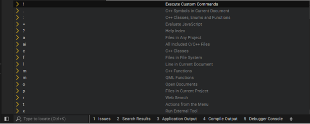
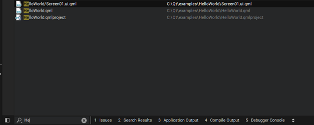
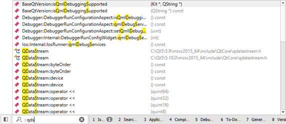
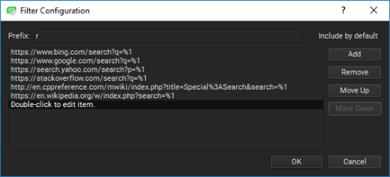
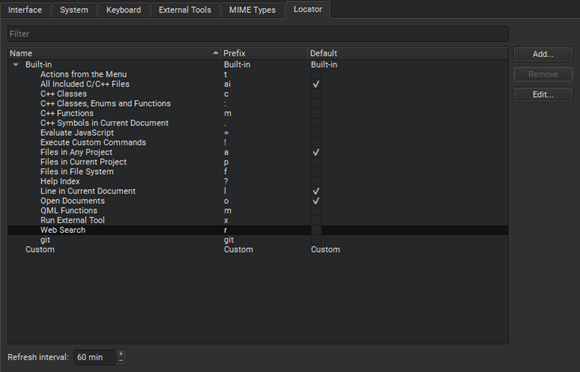
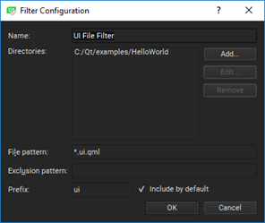

Searching with the Locator
You can find the locator in the bottom left of the Qt Creator window.

To activate the locator:
- Press Ctrl+K (Cmd+K on macOS).
- Select Tools > Locate.
- Select Edit > Go to Line.
- Click the line and column indicator on the editor toolbar.
To open a QML file called HelloWorld.qml in the currently open project using the locator:
- Activate the locator by pressing Ctrl+K.
- Start typing the filename.

- Move to the filename in the list and press Enter.
The file opens in the editor.
- To move to a line in the file, enter the line number in the locator.
To move directly to a particular line and column in the document when you open the document, append them to the file name in the locator, separated by plus signs (+) or colons (:). For example, to open HelloWorld.qml to line 41 and column 2, enter: HelloWorld.qml:41:2.
If the path to a file is very long, it might not fit into the locator window. To view the full path, press Alt when the filename is selected or use the handle next to the locator window to increase the window width.
It is also possible to enter only a part of a search string. As you type, the locator shows the occurrences of that string regardless of where in the name of an component it appears. Some locator filters, such as colon and m, support fuzzy matching, which means that you can enter the uppercase letters to locate a symbol when using camel case or the letters after the underscore when using snake case.
To narrow down the search results, you can use the following wildcard characters:
- To match any number of any or no characters, enter
*. - To match a single instance of any character, enter
?.
Using Locator Filters
The locator enables you to browse not only files, but any items defined by locator filters. By default, the locator contains filters for:
- Locating any open document (
o) - Locating files anywhere on your file system (
f) - Locating files belonging to your project (
p), such as source, header, resource, and.uifiles, or to any project (a) - Locating bookmarks (
b). For more information, see Using Bookmarks. - Locating class (
c), enum, and function (m) definitions in your project or anywhere referenced from your project (:) - Locating QML methods (m)
- Locating symbols in the current document (
.) - Locating a specific line and column in the document displayed in your editor (
l <line_number>:<column_number>) - Opening help topics, including Qt documentation (
?) - Performing web searches (
r) - Running text editing macros that you record and save (
rm). For more information, see Using Text Editing Macros - Executing JavaScript (
=), especially useful for calculations. For more information, see Executing JavaScript. - Executing shell commands (
!) - Executing version control system commands (
git). For more information, see Using Version Control Systems - Triggering menu items from the main menu (
t) - Running external tools (
x)
To use a specific locator filter, type the assigned prefix followed by Space. The prefix is usually a single character. Then type the search string (typically, a filename or class name) or the command to execute.
You can also double-click a locator filter in the filter list to use it. You can use the up and down arrow keys or the Ctrl+P and Ctrl+N keyboard shortcuts to move up and down the list, and then press Enter to use the selected filter.
For example, to locate symbols matching QDataStream:
- Activate the locator.
- Enter a colon (:) followed by a space and the upper case letters in the symbol name (QDataStream):
: qds
The locator lists the results.

Filters locating files also accept paths, such as tools/*main.cpp. Filters locating class and function definitions also accept namespaces, such as Utils::*View. For example, to create a new file and open it in the editor, type f followed by Space, followed by path and file name, and then press Enter.
You can use the filter that triggers menu commands to open sessions. Enter t yoursess or t sess yoursess to trigger File > Sessions > yoursessionname.
By default, the following filters are enabled and you do not need to use their prefixes explicitly:
- Going to a line and column in the current file (
l). - Going to an open file (
o). - Going to a file in any open project (
a).
If locator does not find some files, you can add them to the DISTFILES variable in the .pro file to include them into the distribution tarball of your project and thus make them known to Qt Creator as well.
Configuring Locator Filters
If the default filters do not match your use case, you can check whether you can change them. For all filters, you can change the filter prefix and restrict the search to items that match the filter.
To configure a locator filter:
- In the locator, click
 (Options) and select Configure to open the Locator options.
(Options) and select Configure to open the Locator options. - Select a filter, and then select Edit.
- Specify the prefix string.
- To implicitly include the filter even when not typing a prefix as a part of the search string, select Include by default.
- Specify other available options. For more information, see Adding Web Search Engines.
Adding Web Search Engines
You can use the Web Search (r) locator filter to perform web searches. URLs and search commands for Bing, Google, Yahoo! Search, cplusplus.com, and Wikipedia are configured by default.
To find out the format of the search command to use for your favorite web search engine, perform a search in your browser and copy the resulting URL to the locator filter configuration. Replace the search term with the variable %1.
To add URLs and search commands to the list:
- Select Tools > Options > Environment > Locator > Web Search (prefix: r) > Edit.
- Select Add to add a new entry to the list.

- Double-click the new entry to specify a URL and a search command. For example,
http://www.google.com/search?q=%1. - Click OK.
Creating Locator Filters
To quickly access files not directly mentioned in your project, you can create your own locator filters. That way you can locate files in a directory structure you have defined.
To create a locator filter:
- In the locator, select Options > Configure to open the Locator options.

- Click Add.
- In the Filter Configuration dialog:

- In the Name field, enter a name for your filter.
- In the Directories field, select at least one directory. The locator searches directories recursively.
- In the File pattern field, specify file patterns to restrict the search to files that match the pattern. Use a comma separated list. For example, to search for all
.qmland.ui.qmlfiles, enter*.qml,*.ui.qml - In the Exclusion pattern field, specify file patterns to omit files from the search.
- In the Prefix field, specify the prefix string.
To implicitly include the filter even when not typing a prefix as a part of the search string, select Include by default.
- Click OK.
Configuring Locator Cache
The locator searches the files matching your file pattern in the directories you have selected and caches that information. The cache for all default filters is updated as you write your code. By default, Qt Creator updates the filters created by you once an hour.
To update the cached information manually, select Options > Refresh in the locator.
To set a new cache update time:
- Select Tools > Options > Environment > Locator.
- In Refresh interval, define new time in minutes.
Executing JavaScript
The locator provides access to a JavaScript interpreter, that can be used to perform calculations.
Beside simple mathematical operations, like ((1 + 2) * 3), the following built-in functions exist:
| Function | Purpose |
|---|---|
| abs(x) | Returns the absolute value of x |
| acos(x) | Returns the arccosine of x, in radians |
| asin(x) | Returns the arcsine of x, in radians |
| atan(x) | Returns the arctangent of x, in radians |
| atan2(x, y) | Returns the arctangent of the quotient of its arguments |
| bin(x) | Returns the binary representation of x |
| ceil(x) | Returns the value of x rounded up to the next integer |
| cos(x) | Returns the cosine of x (x is in radians) |
| exp(x) | Returns the value of E to the power of x |
| e() | Returns Euler's number E (2.71828...) |
| floor(x) | Returns the value of x rounded down to the next integer |
| hex(x) | Returns the hexadecimal representation of x |
| log(x) | Returns the natural logarithm (base E) of x |
| max([value1[, value2[, ...]]]) | Returns the highest value of the given numbers |
| min([value1[, value2[, ...]]]) | Returns the lowest value of the given numbers |
| oct(x) | Returns the octal representation of x |
| pi() | Returns PI (3.14159...) |
| pow(x, y) | Returns the value of x to the power of y |
| random() | Returns a random number between 0 and 1 |
| round(x) | Returns the value of x rounded to the next integer |
| sin(x) | Returns the sine of x (x is in radians) |
| sqrt(x) | Returns the square root of x |
| tan(x) | Returns the tangent of x (x is in radians) |